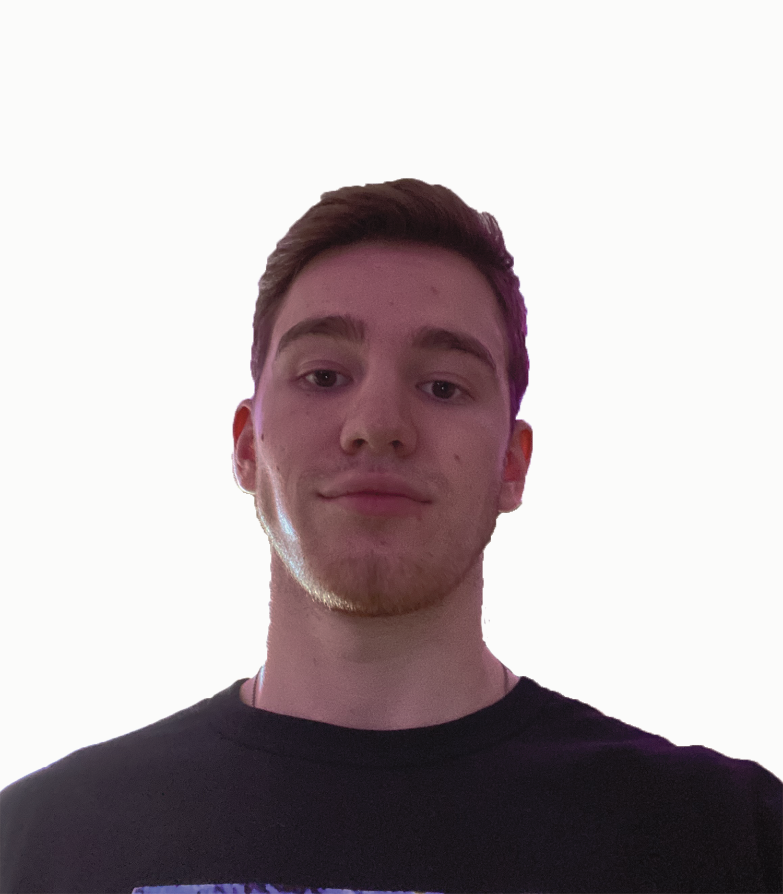

About Me
Hobbies Include:
- Working out
- Video games
- Hiking

Post Secondary
Out of highschool I was never sure what I waned to take in post secondary. I started an HVAC program at mohawk college in Hamilton but it wasn't for me. Then I took time during covid to work and save up some money for school. I worked in a conservation area as a lead hand and equipment operator. I loved that job because I really enjoy being in nature. Last summer I visited my best friend in Ottawa who had been attending Carleton University in computer engineering. After thoroughly enjoying my time in the city and getting to learn more about what he was studying I was inclined to look into programs at Algonquin College. The IMD course peaked my interest as I wanted to learn more about computers and be creative at the same time. That has lead me to now be living in Ottawa with my best friend and attending Algonquin. So far I am very happy with my choices!